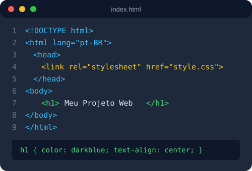

Este site reúne, em uma única página, os conceitos de HTML5 e CSS3
estudados ao longo do curso e aplicados no Trabalho Final de Front-End I.
A página foi construída a partir de uma atividade prática anterior,
evoluída para atender a uma estrutura completa e responsiva,
sem o uso de frameworks ou bibliotecas externas.
Sobre este projeto
O projeto apresenta, de forma prática, os principais recursos do HTML5
e do CSS3: estrutura semântica, imagens, listas, tabelas, links e
responsividade. Todo o código foi escrito manualmente, com o objetivo
de reforçar o entendimento de cada elemento antes de avançar para
ferramentas mais complexas.

Estrutura básica de um documento HTML ligado a um arquivo CSS externo.
Para aprofundar os estudos sobre a linguagem, foi utilizada como
referência a
documentação de HTML da MDN
,
uma das fontes mais completas sobre desenvolvimento web.
Habilidades e tecnologias
Tecnologias praticadas durante a construção deste projeto:
HTML5 semântico
CSS3 (seletores, box model e layout)
Responsividade com media queries
Organização de arquivos e imagens
Controle de versão com Git e GitHub
Etapas de desenvolvimento deste site
Planejamento do conteúdo e da estrutura das seções
Estruturação semântica do HTML
Estilização e organização visual com CSS
Ajustes de responsividade para telas menores
Publicação do repositório no GitHub
Tecnologias utilizadas no projeto
Tecnologia
Uso no projeto
Nível de domínio
HTML5
Estrutura e semântica das páginas
Intermediário
CSS3
Estilização, layout e alinhamento
Intermediário
Media Queries
Ajuste do layout para telas menores e dispositivos móveis
Básico
Git e GitHub
Versionamento e publicação do projeto
Básico
Etapas de um projeto de Front-End
Todo projeto de front-end, independentemente do tamanho, costuma
passar por quatro etapas bem definidas: planejamento do conteúdo,
estruturação em HTML semântico, estilização com CSS e, por fim,
publicação para os usuários finais.
Seguir essa ordem evita retrabalho: alterar a estrutura depois de
finalizar o CSS, por exemplo, costuma quebrar o layout e exigir
ajustes desnecessários.